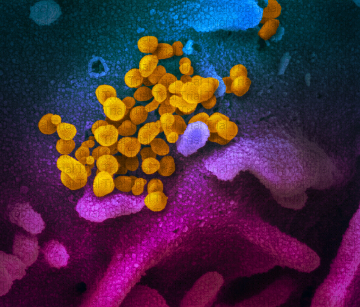
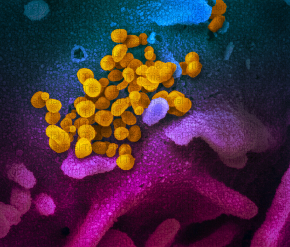

Replication
After entering the cell, this virus sheds its capsid and releases its RNA genome into the cytoplasm. MERS-CoV has an RNA genome with a 5'-cap methylation and a polyadenine tail at the 3' end, and this allows its RNA molecule to bind to the ribosome for translation.
The coronavirus also has a protein called RNA-dependent RNA polymerase (replica) encoded in its genome, which allows the viral genome to be transcribed and new copies produced using the host cell machinery. RNA-dependent RNA polymerase is the first protein translated, and when the translation of this polymerase gene is finished, translation is stopped by the stop codon, this is known as interfering transcription. A copy of the messenger RNA that encodes only one gene is called a monocystron. Provides non-structural protein 
The coronavirus also has a protein called RNA-dependent RNA polymerase (replica) encoded in its genome, which allows the viral genome to be transcribed and new copies produced using the host cell machinery. RNA-dependent RNA polymerase is the first protein translated, and when the translation of this polymerase gene is finished, translation is stopped by the stop codon, this is known as interfering transcription. A copy of the messenger RNA that encodes only one gene is called a monocystron. Provides non-structural protein 